Help
Step 1: Login
- If you are not a IBM Marketplace customer, you need to login with your Google or Amazon account
- We use your Google and Amazon logins to validate the email you already gave us and allows us to cross check it against your license or offer code
- You will be redirected to Google or Amazon’s login screens and then return to Raxak Protect
- Soft Layer/IBM Marketplace users:
- If you are on Soft Layer and using the IBM Marketplace, your subscription button authenticates you automatically
- For our privacy policy, see … privacy policy
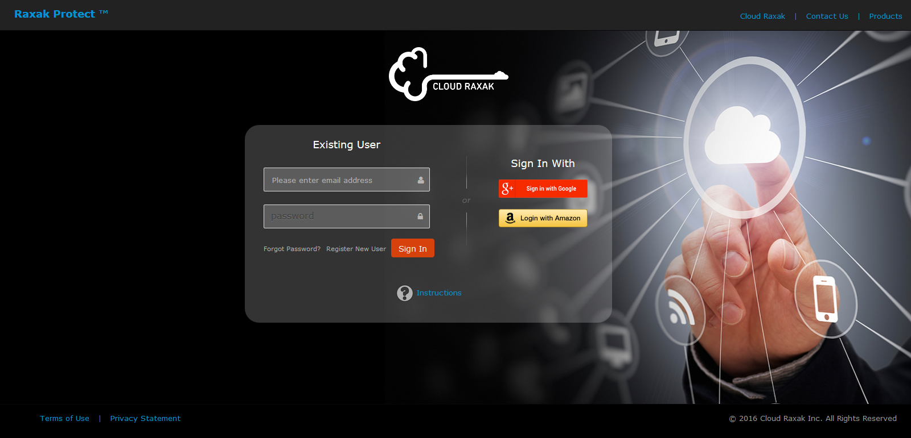
Step 2: Enter Code
- If you have a free-offer code associated with your email, you will enter it here
- Code is not case sensitive
- It must match the email address on the Google or Amazon account you signed in with
- This is a one-time action. Once you have validated the key, you will directly reach the Raxak Protect console on future visits

Step 2: Enter Code test level 2
- If you have a free-offer code associated with your email, you will enter it here
- Code is not case sensitive
- It must match the email address on the Google or Amazon account you signed in with
- This is a one-time action. Once you have validated the key, you will directly reach the Raxak Protect console on future visits
Overview of Raxak Protect
Raxak Protect tool performs compliance tests on your servers that are enrolled into this tool. These servers can be virtual machines (VMs) or bare-metal (hardware box).
The key architectural philosophy of Raxak Protect is that it does not ever place any permanent agent on the server being checked.
The key phases in using Raxak Protect are:
Please note that throughout this document, the words “Server”, “Machine” or “Asset” are used interchangeably and as indicated above, these words imply a virtual machine (VM) or a bare-metal server.
The key architectural philosophy of Raxak Protect is that it does not ever place any permanent agent on the server being checked.
The key phases in using Raxak Protect are:
- Prepare your server for monitoring with Raxak Protect
- Ensure connectivity of your server to the Raxak Protect servers
- Provision (set up or prepare) your server for enrollment in Raxak Protect
- Enroll your provisioned server and apply the security profiles to it in Raxak Protect
- Monitor the results of the compliance checks
Please note that throughout this document, the words “Server”, “Machine” or “Asset” are used interchangeably and as indicated above, these words imply a virtual machine (VM) or a bare-metal server.
Overview of Raxak Protect’s console
All the operations of Raxak protect are accessed via the navigation panel on the left and details of the current panel are on the right in the main window.
The login id is displayed and the help files are available on the top right hand side of the navigation bar.
Dashboard link provides a high level overview of the security compliance status for all the servers enrolled in the Raxak Protect tool for the current user. User can drill down for details via the dashboard itself or by going into one of the specific navigation link available on the left side.
Manage profiles link lists the various security profiles available in the tool along with the enumeration of rules associated with each profile. Description for the profile as well as details for each rule are also available here
Manage servers link allows you to enroll and/or delete servers from the Raxak Protect tool for security compliance checking.
Apply profile link allows you to define and apply one or more security profiles to the enrolled servers. This is also the place where you define the frequency of the compliance checks as well as the process for remediation (manual vs. automatic) when any of the rules for a security profile fail.
Manage Schedule link is where you define a schedule for a given security profile to be executed for a given server. Currently you have the choice of one of the 5 predefined schedules. Hourly, Daily, Weekly, Monthly, or one-time
Server Status link gives you a detailed overview of the compliance checks for every server enrolled in Raxak Protect. It details the rules that passed, failed and were remediated or need input from you for resolution. You have access to the detailed log files for each security compliance run on a server.
Reports and Graphs allow you to view the security compliance data in an audit ready form.
Dashboard link provides a high level overview of the security compliance status for all the servers enrolled in the Raxak Protect tool for the current user. User can drill down for details via the dashboard itself or by going into one of the specific navigation link available on the left side.
Manage profiles link lists the various security profiles available in the tool along with the enumeration of rules associated with each profile. Description for the profile as well as details for each rule are also available here
Manage servers link allows you to enroll and/or delete servers from the Raxak Protect tool for security compliance checking.
Apply profile link allows you to define and apply one or more security profiles to the enrolled servers. This is also the place where you define the frequency of the compliance checks as well as the process for remediation (manual vs. automatic) when any of the rules for a security profile fail.
Manage Schedule link is where you define a schedule for a given security profile to be executed for a given server. Currently you have the choice of one of the 5 predefined schedules. Hourly, Daily, Weekly, Monthly, or one-time
Server Status link gives you a detailed overview of the compliance checks for every server enrolled in Raxak Protect. It details the rules that passed, failed and were remediated or need input from you for resolution. You have access to the detailed log files for each security compliance run on a server.
Reports and Graphs allow you to view the security compliance data in an audit ready form.
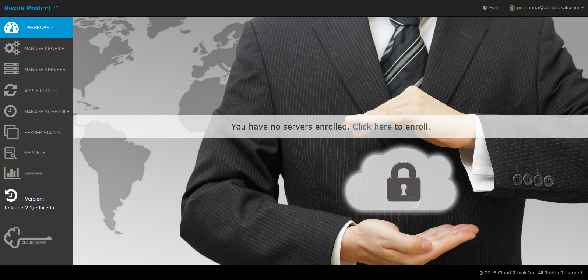
Ensuring Connectivity of your server to Raxak Protect servers
Ensuring connectivity of your server to Raxak protect ’s servers is the first step in using this tool. In order to ensure that Raxak Protect’s servers have access to your server, you need to confirm the following 4 steps:
- Your server must be accessible from the internet. It must have a public IP address that Raxak Protect can reach, or depending on the cloud infrastructure provider, it must have a VPN that can be used to reach private IP addresses (today this capability is only supported for servers on the Soft Layer cloud).
- For applicable servers with a private IP address, you need to know the VPN username and password and the IP address of the VPN gateway
- It should be possible to ping your server by allowing the ICMP protocol through your firewall. This involves opening port -1. This is not a requirement, but helps troubleshoot connection issues.
- You should ensure that port 22 that port 22 (default) or some other known port is open to allow SSH access to your machine.
Provisioning your server for enrollment in Raxak Protect manually
Hotlink a document yet to be created.
Provisioning your server for enrollment in Raxak Protect using Automation
This section describes how you can automatically provision servers using automating tools provided by Raxak Protect
NOTE: If your server has a public IP address and you are interested in both Provisioning as well as enrolling your server at the same time using automation, skip this section and proceed to the section (Provisioning AND Enrolling your server with Public ip address in Raxak Protect using Automation)
NOTE: If your server has a public IP address and you are interested in both Provisioning as well as enrolling your server at the same time using automation, skip this section and proceed to the section (Provisioning AND Enrolling your server with Public ip address in Raxak Protect using Automation)
- Log in to the Raxak Protect console (Access and login to Raxak Protect)
- On the top right of the window, click on the down-arrow next to your login email id.
- Click on the “Custom Setup” line and you will see the following window pop up.
- You should ensure that the you have an account with elevated privilege that Raxak Protect can use to login via SSH. Raxak Protect only uses SSH with RSA key-pairs, it does not use passwords
- In the “Username" box, enter the userid of the above mentioned account that Raxak Protect should use to connect to the server being provisioned for enrollment in Raxak Protect.
- Click on the Download button. The script named “RaxakProtectSetup.sh” will be downloaded to your server, typically to your downloads folder depending on how your browser is configured.
- Log in to the server being provisioned with a privileged userid (e.g. root or some user capable of elevating privilege to root)
- Copy the “RaxakProtectSetup.sh” script to this server using wget, scp, or any such command.
- If not logged in as root, change userid to root by doing sudo su -
- Change the permission of the script to allow it to be executed by doing chmod +x RaxakProtectSetup.sh
- Execute the script by doing ./RaxakProtectSetup.sh
- You are done with the provisioning step at this point. You can check for successful provisioning by doing
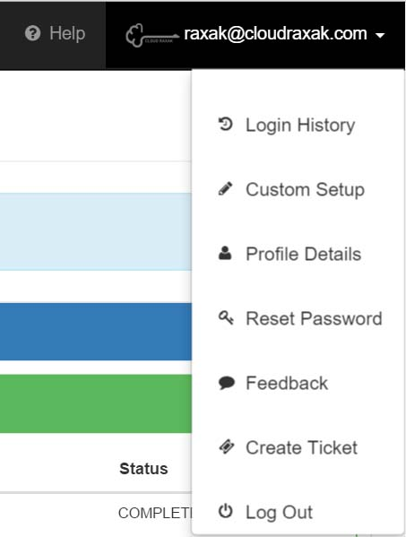
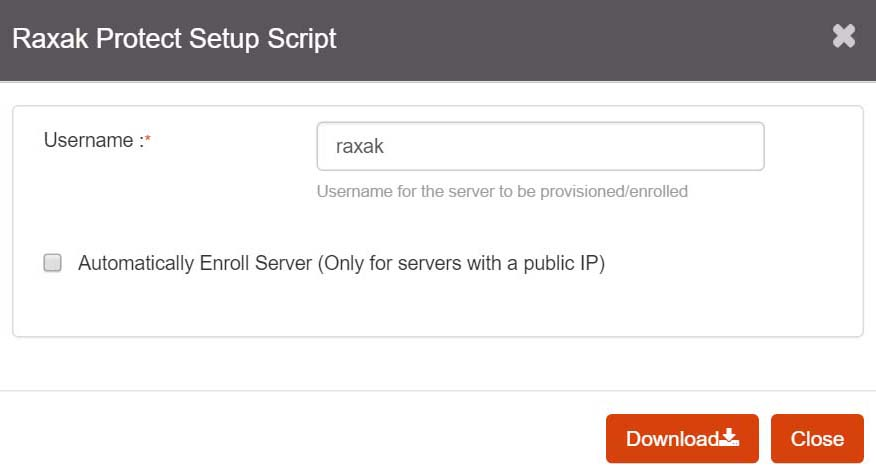
Proceed to the section (Enrolling your provisioned server in Raxak Protect manually) to complete the enrollment process for the recently provisioned server in Raxak Protect app.
fdfn
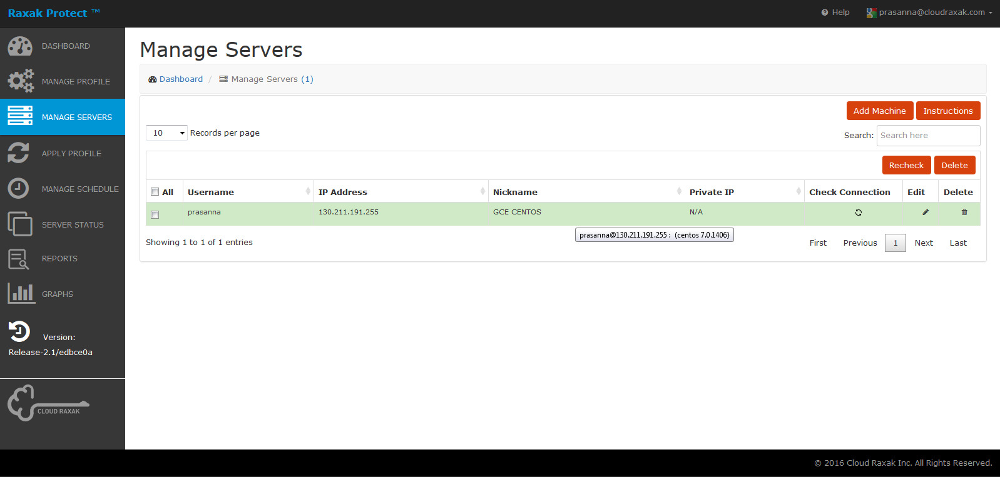
Provisioning AND Enrolling your server with Public ip address in Raxak Protect using Automation
- Ensure that your server has a public ip address
- Log in to the Raxak Protect console
- On the top right of the window, click on the down-arrow next to your login email id
- Click on the "Custom Setup" line and you will see the following window pop up.
- In the "Username" box, enter the userid that Raxak Protect should use to connect to the server being provisioned for enrollment in Raxak Protect.
- Check the box “Automatically Enroll Server”
- Every server that you enroll in Raxak Protect should have at least one security profile defined for it against which the security compliance of that asset is checked.
- Please look at “Help on Profiles (name)” for an explanation of the various security profiles, Remediation Modes and Compliance Frequencies offered by Raxak Protect.
- If you know which profile you would like to apply to this asset as a default, you can choose it from the dropdown choice for “Select Profile” box. You also have the option of leaving the security profile choice at the default value of “none”.
- If you choose a security profile other than the default value of “none”, you also have the option of changing the values of other parameters viz. “Remediation Mode” and “Compliance Frequency”. You can also leave these parameters at the default values of “Manual” and “One time”.
- The security profile that you choose here as well as the parameters for the Remediation Mode and Compliance Frequency will be applied to the server as soon as it enrolls in Raxak Protect.
- Note that through the Raxak Protect’s “Manage Servers” tab, you can ALWAYS change any of the parameters regarding the profile/s associated with the server.
- Click on the Download button. The script named “RaxakProtectSetup.sh” will be downloaded to your server, typically to your downloads folder depending on how your browser is configured.
- Log in to the server being provisioned with a privileged userid (e.g., root or some user capable of elevating privilege to root)
- Copy the “RaxakProtectSetup.sh” script to this server using wget, scp, or any such command.
- If not logged in as root, change userid to root by doing sudo su -
- Change the permission of the script to allow it to be executed by doing chmod +x RaxakProtectSetup.sh
- Execute the script by doing ./RaxakProtectSetup.sh
- Steps n through r should be repeated on all the servers that you are provisioning and enrolling for use in Raxak Protect.
- You are done with provisioning and enrolling your server! You can check for successful provisioning and enrollment by doing
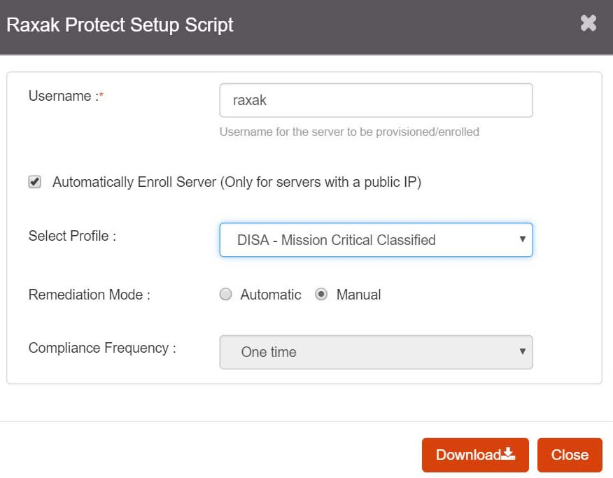
If you had already chosen a profile to be applied to your server while enrolling, then you are done with steps Provisioning AND Enrolling your server with Public ip address in Raxak Protect using Automation and Choosing and applying the profile/s to your enrolled assets.
If you had NOT chosen a profile to be applied to your server or you wish to change the profile or any of its parameters like the “Remediation Mode” or “Compliance Frequency”, proceed to the section Choosing and applying the profile/s to your enrolled assets.
If you had NOT chosen a profile to be applied to your server or you wish to change the profile or any of its parameters like the “Remediation Mode” or “Compliance Frequency”, proceed to the section Choosing and applying the profile/s to your enrolled assets.
Enrolling your provisioned server in Raxak Protect manually
Note 1: If your server has a public ip address and you used the automation script (described above in Provisioning AND Enrolling your server with Public ip address in Raxak Protect using automation) to provision as well as enroll your server, then you are done with this step already.
You can check that you have enrolled your server successfully by ….
Note 2: If your server has a private ip address, or if your server has a public ip address and you chose NOT to enroll your server automatically via the downloaded script RaxakProtectSetup.sh, then you need to enroll your server as the first step in the process. Server enrollment is done via the Manage Servers tab.
This is the view of the Manage Servers tab when you have no servers that have been enrolled in Raxak Protect.
You can check that you have enrolled your server successfully by ….
Note 2: If your server has a private ip address, or if your server has a public ip address and you chose NOT to enroll your server automatically via the downloaded script RaxakProtectSetup.sh, then you need to enroll your server as the first step in the process. Server enrollment is done via the Manage Servers tab.
This is the view of the Manage Servers tab when you have no servers that have been enrolled in Raxak Protect.
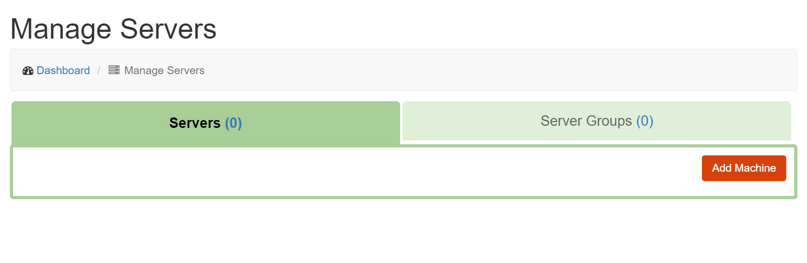
Change Add machines to be consistent with the rest of the terminology, make it Add server?
Change graphic after the change above.
To start the server enrollment, click on “Add Machines” button. Add Machines will open a new window as shown below:
Change graphic after the change above.
To start the server enrollment, click on “Add Machines” button. Add Machines will open a new window as shown below:
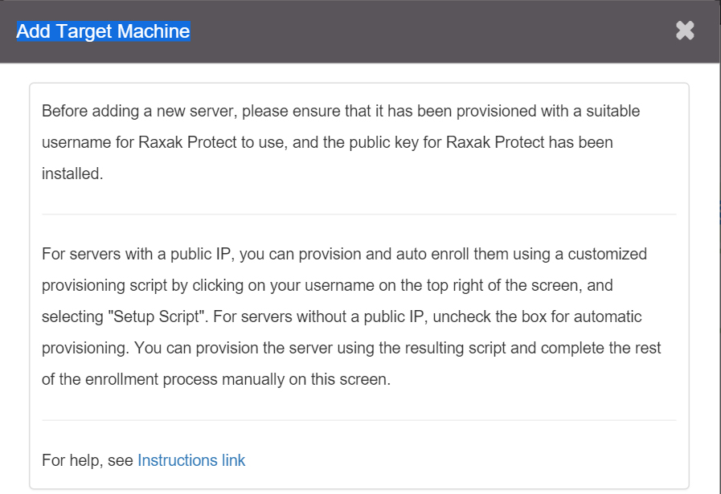
Above needs to change since it is not setup script anymore, it is custom script, also, automatic provisioning is unchecked. Asking for 2nd para to be deleted. Need new graphic after the change.
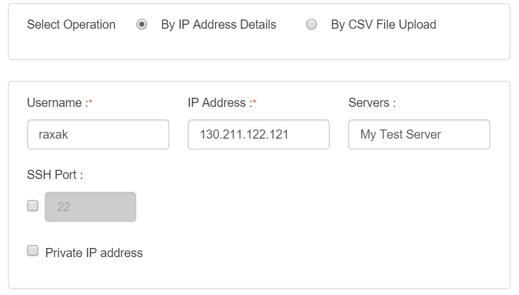
Help text for Username. Change Servers to say “Server nick name”
New graphic after changes
New graphic after changes
Enrolling the server by IP address Details:
Username and the IP Address fields are mandatory; you must fill these boxes.
For Username, use the same username that you used when you provisioned this server that you are now enrolling.
In the Servers field, enter the nickname for the server. This is to allow you to address the server by a name which is easily recognizable by you rather than by the hard to remember IP address. This field is optional.
For Username, use the same username that you used when you provisioned this server that you are now enrolling.
In the Servers field, enter the nickname for the server. This is to allow you to address the server by a name which is easily recognizable by you rather than by the hard to remember IP address. This field is optional.
As mentioned above in Ensuring Connectivity of your asset to Raxak Protect servers, typically port 22 is asked to be left open for SSH use. If you did not open port 22 for SSH access, and opened another port for SSH access, then check the box under SSH port, next to 22 and add that port number in it.
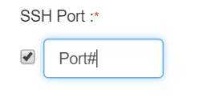
need new graphic after the change.
If you checked that box, then you must add the port number that you opened for SSH.
If your server has a private ip address and was created with Openstack, check the box that says “Private IP address for Openstack server”. It will open up another three boxes that you must fill.
If you checked that box, then you must add the port number that you opened for SSH.
If your server has a private ip address and was created with Openstack, check the box that says “Private IP address for Openstack server”. It will open up another three boxes that you must fill.
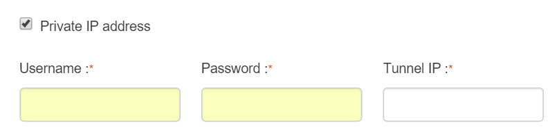
All three fields VPN Username, VPN Password and VPN Tunnel IP are mandatory.
Information for VPN username, Password and Tunnel IP.
Once you are done filling in the fields, click on the Submit button at the bottom right.
If the server enrollment was successful, you should see the following window pop up.
Information for VPN username, Password and Tunnel IP.
Once you are done filling in the fields, click on the Submit button at the bottom right.
If the server enrollment was successful, you should see the following window pop up.
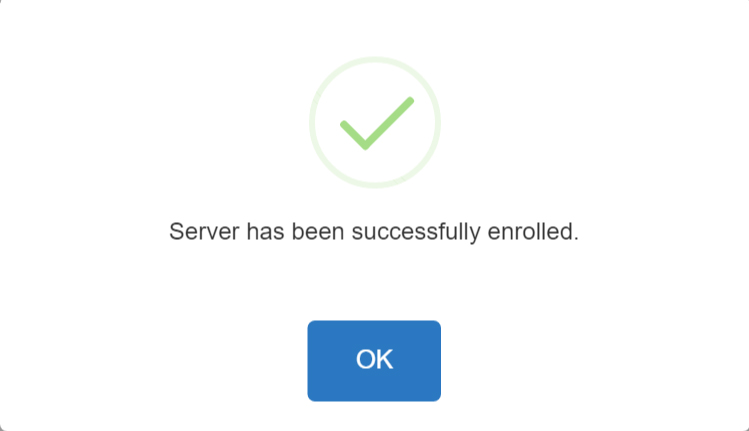
The Manage Servers tab will reflect your newly added server as follows:
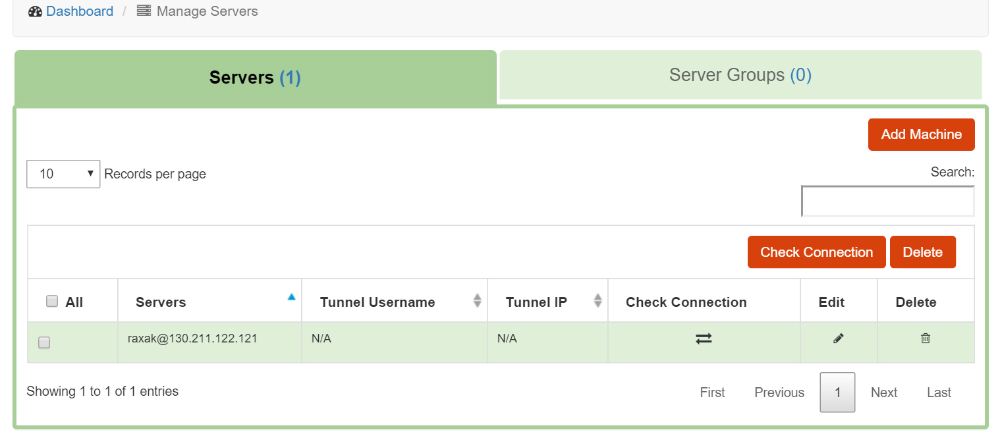
Where is the nickname?
Should we explain Check Connection? Why is it imp to be here? Would the user use it? What all can you change via Edit? Does it do a delete and add?
You can enroll more servers by clicking on the Add Machines button and following the steps outlined above.
I need more information about Server Groups.
If your server could not be successfully enrolled, ……
Examples of what all can cause the enrollment process to fail and where to go for possible causes and solutions.
Should we explain Check Connection? Why is it imp to be here? Would the user use it? What all can you change via Edit? Does it do a delete and add?
You can enroll more servers by clicking on the Add Machines button and following the steps outlined above.
I need more information about Server Groups.
If your server could not be successfully enrolled, ……
Examples of what all can cause the enrollment process to fail and where to go for possible causes and solutions.
Enrolling the server by CSV File Upload:
I know nothing about this.
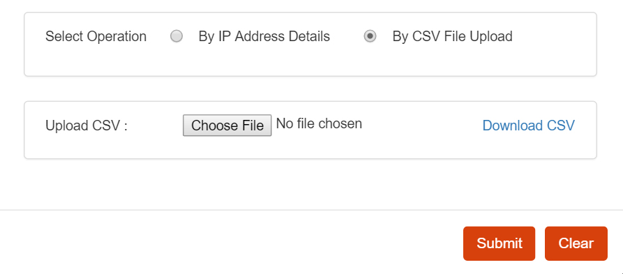
If the server enrollment was successful, you should see the following window pop up.
If your server could not be successfully enrolled, ……
Examples of what all can cause the enrollment process to fail and how to diagnose or where to go for possible causes and solutions.
Not talking about the server groups as yet.
Examples of what all can cause the enrollment process to fail and how to diagnose or where to go for possible causes and solutions.
Not talking about the server groups as yet.
Step 6: Select a Profile
- Return to the “Select Profile” tab and select a suitable security profile
- Profiles that begin with the roman numerals I—III are DISA/NIST STIGs
- Demonstration profile is only used for testing. It runs fast and converges quickly
- Rules that belong to the selected profile are shown in the right hand pane
- Clicking on a rule brings up a full definition of the rule and its fix
- Note that the Undo compliance change profile only reverts the changes applied by the Demonstration Profile , and is only useful in a demonstration scenario. We do not recommend using this profile in real applications
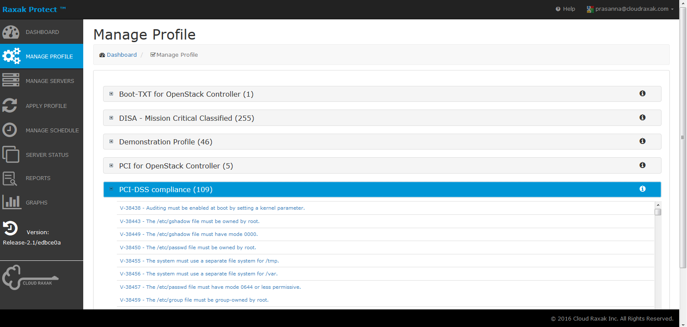
Step 7: Apply Profile
- Switch to the “Apply Profile” tab to apply the profile
- All machines added via the “Target Machines” tab will be shown
- Select the ones you want to apply the profile to using the >, >>, <, << buttons
- Select whether you want manual or automatic remediation, and how often you want the checks repeated
- Finally click [Apply Profile]
- A progress bar will appear and show the compliance check in progress
- Note that some tests take a while to complete
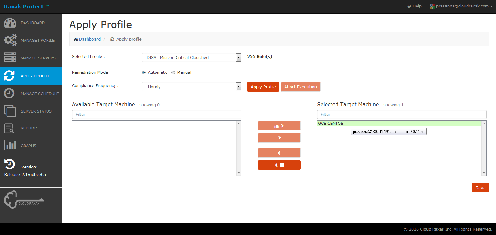
Choosing the profile/s for your enrolled servers
First step in applying the Security Profiles to your servers is to familiarize yourself with the various profiles (and its associated rules) available for you in Raxak Protect. A detailed help on the available security profiles as well as the Remediation Mode and frequency of the checks is available in the help file “Profile help file”.
A high level description for each of these profiles and its associated rule set is available for you to view in Manage Profiles which is available to you from the navigation panel on the left. Hover over the information symbol (i) to see the description for each profile.
Expanding the + sign besides each profile definition will show you all the rules that make up that profile. Clicking on a rule definition will pop up a window with details about that rule.
A rule can either pass or fail during the security compliance check for your enrolled asset. The rules fall into two categories:
An example of a rule that can be automatically remediated is:
An example of the rule that needs user input for remediation is:
The rules in the Profile definition are flagged to indicate if automatic remediation is possible.
A high level description for each of these profiles and its associated rule set is available for you to view in Manage Profiles which is available to you from the navigation panel on the left. Hover over the information symbol (i) to see the description for each profile.
Expanding the + sign besides each profile definition will show you all the rules that make up that profile. Clicking on a rule definition will pop up a window with details about that rule.
A rule can either pass or fail during the security compliance check for your enrolled asset. The rules fall into two categories:
- ones that can be automatically remediated if they fail during the compliance check for your server
- ones that cannot be automatically remediated and need user input for remediation.
An example of a rule that can be automatically remediated is:
An example of the rule that needs user input for remediation is:
The rules in the Profile definition are flagged to indicate if automatic remediation is possible.
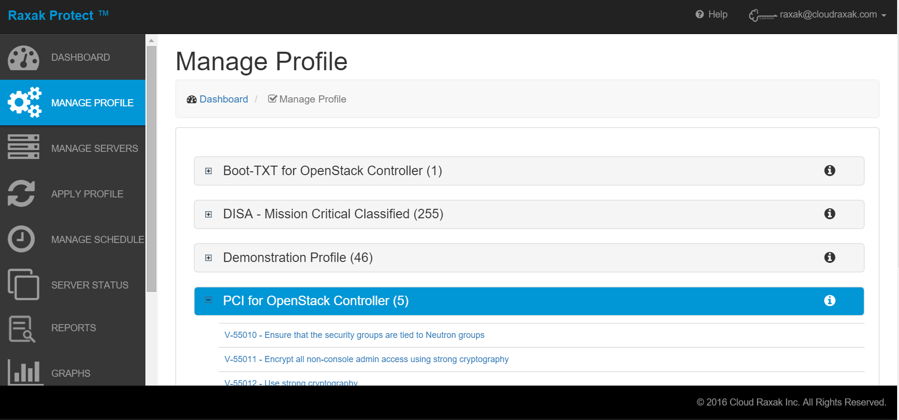
Go through the rule sets for each profile and decide which profile or profiles you would like to apply to your assets.
You can apply more than one security profile for an enrolled server or a server group.
Applying the profile/s to your enrolled servers
Application of a given profile, Remediation Mode and the Compliance Frequency is done in Raxak Protect via
“Apply Profile” which is available to you from the navigation panel on the left.
This graphic needs to change with the requested change.
“Apply Profile” which is available to you from the navigation panel on the left.
This graphic needs to change with the requested change.
Step 8: Seeing Results
- The “Success”, “Failure” , and “Manual” tabs show which rules succeeded, failed, or need manual intervention
- Selecting a rule in the panel and clicking [Describe Rule] brings up a detailed description of the rule
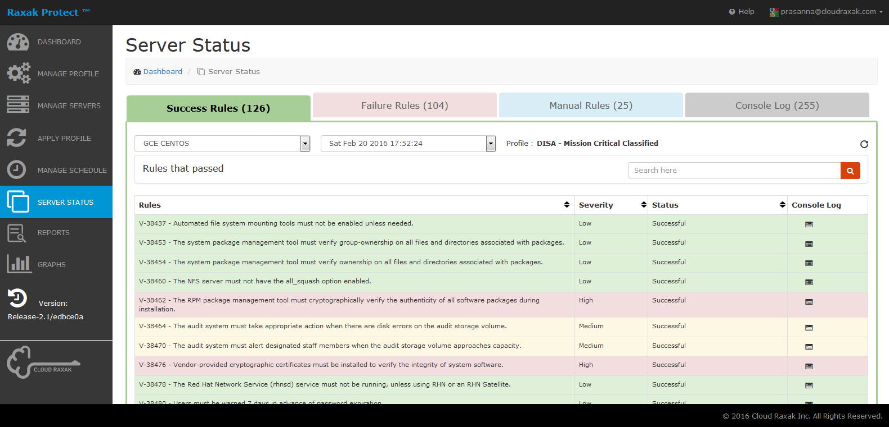
Step 9: The Failure Tab
- The “Failure” tab is relevant only when manual remediation was selected when the profile was applied
- Any rules that fail will appear here
- The [Remediate] button will attempt to remediate the finding
- If automatic remediation succeeds, the rule will be moved to the “Success” tab
- If if fails, it will be moved to the “Manual” tab
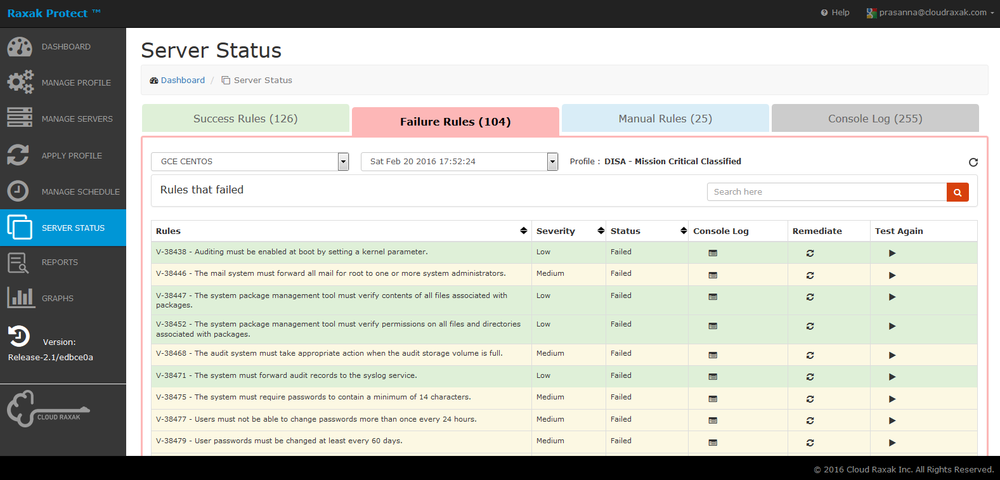
Step 10: The Manual Tab
- The “Manual” tab shows rules that cannot be automatically remedieated
- It also shows rules for which the auto-remediation was attempted but failed
- These are usually conditions that cannot be determined from the VM’s OS (e.g., presense of external back ups), or conditions that require a disk repartition or reboot to fix (e.g., setting up logical volumes)
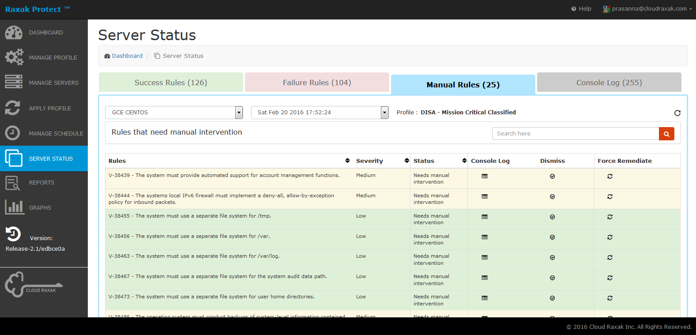
Step 11: Audit Ready Logs
- The “Console Log” tab shows the complete output of the system console as the rules were applied
- The pull down on the top right of the screen allows you to look at historical logs for the machine shown in the top-left pull down

Step 12: Reports
- The “Report Log” tab allows you to compare the latest run with previous runs
- The run to compare against is selected from the top right drop down menu (in this example, Wed May 13…)
- The [Difference] button brings up a difference between the current run and the selected older run
- The [View Report] button produces a detailed printable compliance report that can be included as part of an audit log for your machines
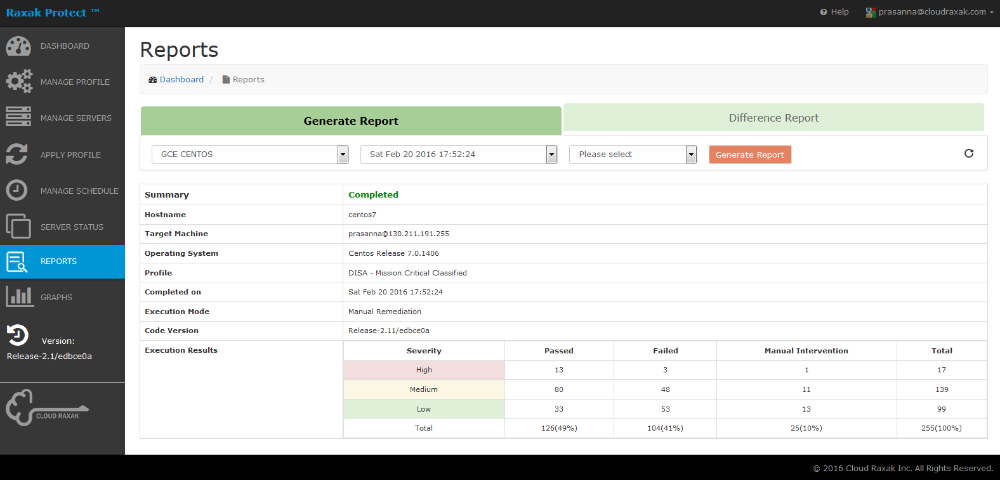